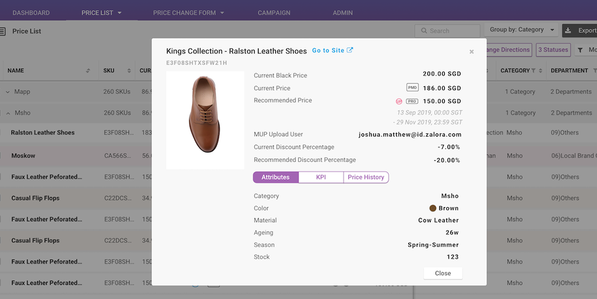
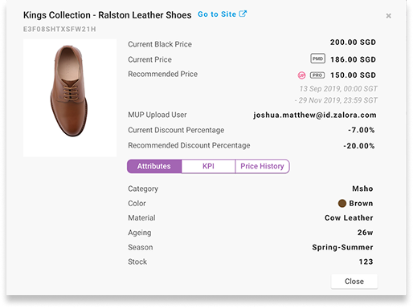
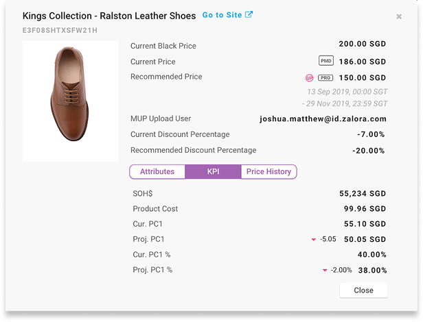
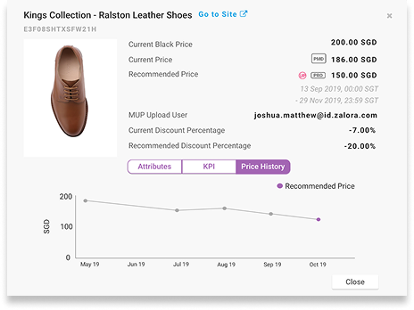
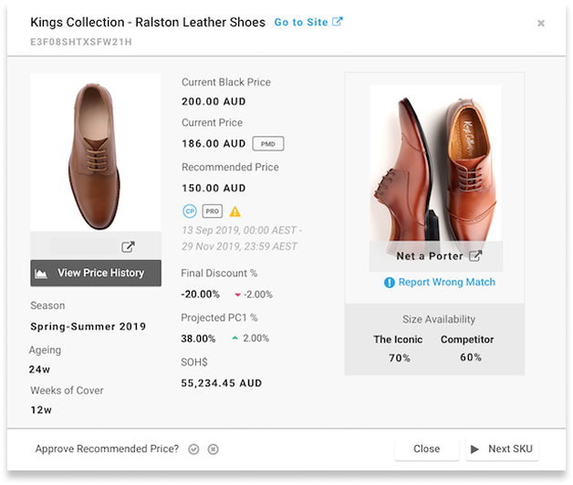
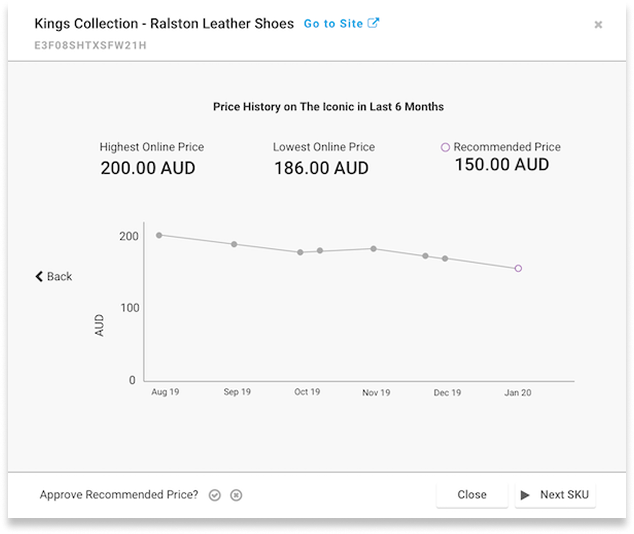

Product Inspector for Competitor Price Match
The pricing system regularly suggests new prices based on the prices of the same products on competitors' websites. These price suggestions were listed out in table view, together with price suggestions from other channels, such as those manually uploaded by users. Managers need a dedicated view for checking price recommendations on product level to decide on price matching product by product.
- Narrowed the target from all regions to Australia only, after discovery research showed a workflow mismatch elsewhere.
- Cut a planned price-history chart from MVP scope after usability testing showed it would mislead, not inform.
- Shipped within the 4-week design timeline, validated with the primary user group before handoff.
Who was involved in this project
| Stakeholder | Role in Project |
|---|---|
| UX Designer (me) | Led end-to-end design from wireframing through usability testing; scoped relevant data fields, conducted user research, iterated on prototypes and delivered the final MVP design |
| Product Manager | Collaborated on scoping and listing all available price match data fields; aligned on feature requirements and the 4-week design timeline |
| Pricing Managers, Australia | Primary end users; responsible for reviewing competitor price recommendations and approving or rejecting them product by product. Participated in usability testing in Iteration 2 |
| Users from Other Regions | Participated in Iteration 1 discovery interviews; their feedback informed the strategic decision to narrow the design focus to the Australian market |
Scoping the problem before designing the solution
The pricing platform regularly suggested new prices by checking the same products on competitors' websites. These suggestions were listed in a shared table view alongside price changes from other channels, with over 30 columns of data, making it difficult for managers to evaluate any single product with focus.
Rather than designing a new view around all existing data, my objective was to determine which data were truly relevant to competitor price matching, so the UI would show only what was necessary for managers to make confident decisions.





- Data on the competitor's prices was more insightful than data on internal platform prices. The price history chart showed inhouse records, not the competitor's, telling users little about the product's performance outside the platform.
- Categorising data under "Attributes" and "KPI" caused confusion. The labels sounded too similar. One user suggested renaming "KPI" to "Margins", which better matched their business unit's mental model.
Narrowing the target from all regions to Australia only
Rather than design for a global user who wouldn't use the feature, I focused the design on Australian pricing managers and rebuilt the direction around their actual workflow, reprioritising competitor data over internal data in the next iteration.
Reorienting around competitor data
With the target user clarified, I restructured the design around the decisions that Australian pricing managers actually needed to make: is this the right competitor product? And does our platform have room to adjust its price?
Prioritising competitor data over internal data
I adjusted the design to emphasise competitor data over internal data, showing the competitor's product picture alongside the platform's, and surfacing size availability as a primary data point. User interactions including approving prices, rejecting them, reporting a wrong match and navigating to the next SKU were also built into this prototype.


Validated with Australian managers: Iteration 2 interviews tested the updated prototype with this group to confirm the design direction and surface any remaining friction.
- Competitor product pictures and size availability are the most critical data for deciding on a price match and verifying that the system is comparing the right products.
- Users welcomed new interactions like reporting a wrong match and navigating to the next item. They were glad they could stay in this view to run through multiple products without returning to the table.
- Price change history in a chart sounded like a good idea, but one user flagged that it would not be insightful in Australia's market. Legal restrictions in Australia mandate that prices cannot exceed the initial price points set by the merchant, so the price trend would always be a downtrend, making the chart uninformative.
Cutting the price history chart from MVP scope
The price history chart had been part of the design since the initial wireframe. Despite sounding useful, the usability test with Australian managers revealed it would add visual noise without aiding decisions in this market. I made the call to remove the price history from the MVP, keeping the final design focused on what was genuinely decision-relevant.
A focused view built for confident decisions
The final Product Inspector was not a rearrangement of the existing 30-column table. It was a purpose-built view designed around the decisions Australian pricing managers needed to make, validated through two iterations of user research.

What changed, and why
The table below captures the three most significant decisions made between the initial wireframe and the final MVP.
| Dimension | Initial Wireframe | Final MVP | Rationale |
|---|---|---|---|
| Data focus | Showed internal platform prices alongside competitor data, mirroring the existing table | Prioritised competitor data (product image and size availability) as the primary decision inputs | Internal data told users little about how the product performed outside the platform |
| Price history chart | Included as a feature showing price trends over time | Removed from MVP scope | Legal restrictions in Australia mean prices can only trend downward, making the chart uninformative for this market |
| Target market | Designed for all regions based on a global user group | Focused on Australian managers following Iteration 1 research | Users outside Australia tended to review prices in list view rather than product by product, so narrowing the target prevented designing for a user who would not use the feature |
Outcomes
Usability testing with Australian managers confirmed all three decisions above before handoff, and the MVP shipped within the 4-week design timeline.
What I'd do differently
Region-specific research should have come before the first prototype, not after. Running Iteration 1 globally cost a mid-project pivot.
I'd also invest more in link and button contrast, given how data-dense this view is, to reduce attention load for Pricing Managers.
Some visuals have been adapted to highlight key design decisions and avoid reproducing product interfaces in full.